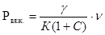

ОРДЕНА ЛЕНИНА ГЛАВМОССТРОЙ при МОСГОРИСПОЛКОМЕ
НИИМосстрой
ИНСТРУКЦИЯ
ПО ТЕХНОЛОГИИ ПРОИЗВОДСТВА РАБОТ
ПРИ УСТРОЙСТВЕ СТЯЖЕК ИЗ ПОРИЗОВАННЫХ РАСТВОРОВ
ВСН 187-82
Москва 1983
"Инструкция по технологии производства работ при устройстве стяжек из поризованных растворов" разработана лабораторией отделочных работ Научно-исследовательского института "НИИМосстрой" и согласована с Техническим управлением и Управлением отделочных работ Главмосстроя.
В разработке инструкции принимали участие кандидаты технических наук А.Г. Булычев, Г.С. Агаджанов, мл. науч. сотр. Л.Д. Пахомова и ст. лаборант Р.Д. Габсатаров.
|
Ордена Ленина Главное управление по жилищному и гражданскому строительству в г. Москве |
Инструкция по технологии производства работ при устройстве стяжек под полы |
|
ГЛАВМОССТРОЙ при МОСГОРИСПОЛКОМЕ |
|
|
Техническое управление |
|
|
Управление отделочных работ |
ВСН 187-82 |
1. Общие положения
1.1. Настоящая инструкция предназначена для организации работ с применением поризованных цементно-песчаных растворов при устройстве стяжек полов в жилых, общественных и промышленных зданиях, возводимых строительными организациями Главмосстроя.
1.2. Требования настоящей инструкции должны соблюдаться при приготовлении смесей поризованных растворов в построечных условиях и устройстве из них элементов пола.
1.3. Инструкция разработана в соответствии с требованиями СНиП II-А.7-71, СНиП II-В.8-71, СНиП III-В.14-72, ВСН 67-157-77 и ВСН 35-80.
Конструкция полов должна удовлетворять эксплуатационным требованиям, предъявляемым к полам жилых, общественных и промышленных зданий.
1.4. Мелкозернистые поризованные растворы, применяемые для устройства элементов пола (стяжек), приготовляются из цементного вяжущего, мелкого заполнителя (песка), воды и специальных добавок.
|
РАЗРАБОТАНА |
УТВЕРЖДЕНА |
Срок введения |
Составы поризованных растворов должны обеспечивать наименьший расход вяжущего, необходимую подвижность смеси (текучесть по вискозиметру Суттарда) для подачи ее на рабочее место механизированным способом, удобоукладываемость и равномерное вспучивание в элементах полов.
1.5. Поризованный раствор может быть использован в качестве теплоизоляционного слоя в полах перекрытий над неотапливаемыми помещениями, толщина теплоизоляционного слоя устанавливается расчетом.
1.6. Конструкции полов с применением поризованных растворов предназначены для использования в помещениях с нормативными равномерно-распределенными нагрузками на пол не более 400 кг/м2 или с сосредоточенными нагрузками не более чем в 200 кг и выбираются в зависимости от назначения помещения.
1.7. Устройство элементов полов (стяжек) из поризованных растворов не допускается в помещениях, подвергающихся длительному воздействию влаги и агрессивных жидкостей.
2. Материалы
2.1. Для приготовления поризованных растворов применяются следующие материалы:
вяжущее - портландцемент марки не ниже 400, удовлетворяющий требованиям ГОСТ 10178-76 "Портландцемент, шлакопортландцемент, пуццолановый портландцемент, и их разновидности";
заполнитель - кварцевый песок, отвечающий требованиям ГОСТ 8736-77 "Песок для строительных работ. Общие требования";
порообразующая добавка - алюминиевая пудра ПАП-1, соответствующая ГОСТ 5494-71 "Пудра алюминиевая пигментная";
поверхностно-активное вещество (ПАВ) - мыло "Прогресс" (ТУ 38-10719-77) и другие иейтральные мыла;
различиые добавки, интенсифицирующие процесс газообразования и регулирующне сроки схватывания - серно-кислый натрий, отвечающие требованиям ГОСТ 6318-77 "Натрий сернокислый (сульфат натрия безводный)" или другие виды интенсификаторов, соответствующие по свойствам сернокислому натрию;
вода, удовлетворяющая требованиям ГОСТ 2874-73 "Вода из городской водопроводной сети хозяйственно-питьевого и промышленного водоснабжения";
поливинилацетатная дисперсия (ПВАД), соответствующая требованиям ГОСТ 18992-80 "Дисперсия поливинилацетатная гомополимерпая грубодисперсная";
пластифицирующая добавка - суперпластификатор С-3, отвечающий требованиям ТУ 6-14-19-252-79 Минхимпрома СССР.
2.2. Поливинилацетатную дисперсию применяют в виде водного раствора 25-процентной концентрации.
2.3. Суперпластификатор С-3 используют в виде водного раствора в соотношении 1:2.
2.4. Поверхностно-активное вещество (ПАВ) применяют в виде мыльно-водной эмульсии в соотношении компонентов по весу 1:10.
2.5. Алюминиевую пудру следует применять в виде мыльно-водно-алюминиевой суспензии, приготовленной в следующем весовом соотношении компонентов:
алюминиевая пудра ПАП-1 - 1 вес.ч.
мыльно-водная эмульсия - 2 вес.ч.
3. Подбор состава поризованного раствора
3.1. Подбор состава поризованного раствора осуществляет строительная лаборатория в соответствии требованиями п.41-4.12 СН 277-70 "Инструкция по технологии изготовления изделий из ячеистых бетонов" в следующей последовательности:
подбор исходных материалов для приготовления поризованной смеси;
расчет составов для опытных замесов, приготовление опытных замесов, испытание контрольных образцов, обработка полученных результатов и назначение рабочего состава;
проверка рабочего состава поризованного раствора в производственных условиях.
3.2. Материалы для приготовления поризованных растворов должны удовлетворять требованиям раздела 2 настоящей инструкции.
3.3. Определение предварительного расхода цемента и заполнителя (песка) на 1 м3 поризованного раствора производится расчетным путем или по таблице 1. Расход материалов на 1 м3 определен для поризованного раствора, текучесть которого по вискозиметру Суттарда для всех марок составляет от 24 до 28 см.
Таблица 1
Примерный состав стяжки и расход материалов
|
Материалы для разных слоев |
Состав слоев стяжки |
Расход, кг |
||
|
вес. часть |
вес, % |
на 1 м3 раствора |
на 100 м2 стяжки |
|
|
Нижний слой |
||||
|
Цемент М400 |
480 |
32,9 |
470 |
1650 |
|
Песок |
960 |
65,8 |
940 |
3300 |
|
ПВАД (на сухое вещество) |
7,2 |
0,83 |
7,57 |
26,5 |
|
Суперпластификатор С-3 (на сухое вещество) |
2,4 |
0,18 |
2,5 |
9,0 |
|
Алюминиевая пудра |
0,3 |
0,05 |
0,28 |
1,5 |
|
Натрий сернокислый |
3,0 |
0,22 |
2,82 |
12,0 |
|
Мыло |
0,2 |
0,02 |
0,21 |
1,0 |
|
Вода |
366 |
1487 |
||
|
Верхний слой |
||||
|
Цемент М500 |
480 |
33,2 |
566 |
566 |
|
Песок Мкр-1 |
960 |
66,4 |
1132 |
1132 |
|
Суперпластификатор С-3 |
2,8 |
0,3 |
5,1 |
5,1 |
|
Алюминиевая пудра |
0,1 |
0,008 |
0,136 |
0,136 |
|
Натрий сернокислый |
1,0 |
0,090 |
1,53 |
1,53 |
|
Мыло |
0,05 |
0,002 |
0,054 |
0,054 |
|
Вода |
441 |
441 |
||
3.4. Объемная масса поризованного раствора, высушенного до постоянной массы, принимается в зависимости от заданной марки раствора.
3.5. Расход цемента на 1 м3 бетона определяется по формуле:

Рвяж. - расход цемента, кг;
 - объемная масса
поризованного раствора, высушенного до постоянной массы, кг/м3;
- объемная масса
поризованного раствора, высушенного до постоянной массы, кг/м3;
К - коэффициент, учитывающий гидративную воду, предварительно принимаемый по табл. 2;
С - отношение заполнителя к вяжущему по весу.
- объем поризованной смеси, м3.
Таблица 2
|
Наименование |
Объемная масса поризованного раствора, кг/м3 |
|||
|
1200 |
1300 |
1400 |
1500 |
|
|
Коэффициент, учитывающий гидративную воду, К0 |
1,03 |
1,032 |
1,035 |
1,04 |
|
Отношение заполнителя к вяжущему, С |
1,5-2 |
1,5-2 |
1,5-2 |
1,5-2 |
3.6. Расход заполнителя на 1 м3 поризованного раствора определяется по формуле:
, где
Рзап - расход заполнителя (песка), кг;
Рвяж. - расход цемента, кг;
С - отношение заполнителя к вяжущему.
3.7. Расходы алюминиевой пудры, сернокислого натрия (в пересчете на сухое вещество) н воды приведены в табл. 1.
3.8. При соответствии лабораторных образцов заданным значениям по прочности и объемной массе состав смеси передается в производство. Составы могут быть скорректированы с учетом производственных условий (смесительного оборудования, свойств исходных материалов, температуры окружающего воздуха и др.).
4. Приготовление и транспортирование
поризованных цементно-песчаных растворов
4.1. Поризованные цементио-песчаные смеси могут быть приготовлены из отдельных компонентов - вяжущее, заполнитель, вода, добавки - или с использованием готовых цементно-песчаных смесей, воды и добавок.
4.2. Дозирование материалов производится взвешиванием. Разрешается объемное дозирование заполнителей, воды, цементно-песчаных смесей, алюминиевой суспензии, водного раствора сернокислого натрия при точности дозирования ±5%.
4.3. Цементно-песчаные смеси, используемые для приготовления поризованных растворов, должны готовиться в соответствии с требованиями СН 290-74 "Инструкция по приготовлению и применению строительных растворов".
4.4. Добавки готовятся из компонентов, указанных в п.2.1, путем их перемешивания в специальных емкостях или мешалках.
4.5. Приготовление поризованных растворов производится в смесителях принудительного перемешивания циклического действия в непосредствеиной близости от места устройства полов.
4.6. Последоватвльвость загрузки смесителя:
приготовление смеси из отдельных компонентов - вода, заполнитель, вяжущее, поливинилацетатная дисперсия, суперпластификатор, водно-алюминиевая суспензия, водный раствор сернокислого натрия.
использование готового цементно-песчаного раствора - вода, цементно-песчаный раствор, поливинилацетатная дисперсия, суперпластификатор, водно-алюминиевая суспензия, водный раствор сернокислого натрия.
4.7. Общая продолжительность приготовления и транспортирования поризованных растворов зависит от температуры исходных материалов и окружающей среды, определяется опытным путем и ориентировочно может быть принята:
при приготовлении из сухих компонентов - 15 мин с момента загрузки смесителя и 5 мин с момента введения в смесь водно-алюминиевой суспензии.
при приготовлении из готовых цементно-песчаных растворов - 10 мин с момента загрузки смесителя и 5 мин с момента введения водно-алюминиевой суспензии.
4.8. Поризованный раствор, уложенный в полы, должен иметь заданные параметры с отклонением не более:
|
объемная масса во вспученном состоянии |
- ±5% |
|
текучесть по Суттарду |
- ±2 см. |
5. Устройство элементов из поризованных растворов
5.1. Работы по устройству элементов полов из поризованных растворов выполняются в соответствии с требованиями СНиП III-В.14-72 и данной инструкции.
Укладка раствора должна производиться при температуре не ниже +5° С.
5.2. Укладка поризованного раствора производится только по ровному основанию (допускаемые просветы при проверке двухметровой рейкой должны быть не более 6 мм).
5.3. Неровности основания более 5 мм необходимо выравнивать раствором марки не чиже 100 и не содержащим специальные добавки.
5.4. Укладка поризованного раствора производится равномерным слоем путем плавного перемещения резинотканевого шланга растворонасоса или пневмонагнетателя.
5.5. Толщина укладываемого слоя должна быть меньше проектной на величину вспучивания, определяемую лабораторным путем.
5.6. Укладка верхнего упрочняющего слоя производится не ранее чем через 48 часов.
5.7. Поверхность свежеуложенного раствора должна быть тщательно выровнена деревянными или алюминиевыми полутеркоми длиной 120-150 см. Выравнивание следует производить непрерывно и заканчивать до начала интенсивного вспучивания уложенной смеси.
5.8. Места примыкания свежеуложенной поризованной смеси к стенам и перегородкам должны быть изолированы прокладками из рулонных материалов. Во время укладки и набора прочности поризованного раствора в помещениях не допускаются сквозняки.
3.9. Перерывы при устройстве элементов полов из поризованных растворов в пределах одного помещения не допускаются. В отдельных случаях в помещениях большой площади допускается укладка раствора участками площадью до 120-150 м2. Обработку рабочих швов производят согласно требованиям СНиП III-В.14-72.
6.10. В период вспучивания и твердения поризованных растворов поверхности элементов пола должны быть защищены от пересыхания и механических повреждений. Передвижение людей разрешится при достижении стяжкой прочности не менее 2 кг/см2. Такая прочность обеспечивается черед 2-3 суток после укладки смеси при температуре от +15°С до 20°С.
6. Контроль качества работ
6.1. Контроль качества устройства элементов полов из поризованных растворов заключается в:
контроле материалов (цемента, песка, алюминиевой пудры, сернокислого натрия);
пооперационном контроле производственных процессов;
контроле качества готовых слоев и стяжек.
6.2. Приемка помещения для производства работ производится в соответствии с требованиями СНиП III-В.14-72 и настоящей инструкции.
6.3. Приемка исходных материалов и проверка их качества производится в соответствии с требованиями:
для цемента - ГОСТ 10178-76;
для песка - ГОСТ 8736-77;
для алюминиевой пудры - ГОСТ 5494-71;
для сернокислого натрия - ГОСТ 6318-77;
для поливинилацетатной дисперсии - ГОСТ 18992-73;
для суперпластификатора С-3 - ТУ 6-14-19-252-79;
для поверхностно-активного вещества (мыла) -ТУ 38-10719-77.
6.4. Операционный контроль должен включать:
контроль выполнения установленной технологии: правильность хранения и дозирования материалов, порядок загрузки составляющих в смеситель, время перемешивания и транспортирования смеси, соблюдение правил устройства слоев и стяжек, условия твердения уложенных растворов.
контроль качества добавок: однородность водно-алюминиевой суспензии, плотность водных растворов сернокислого натрия, суперпластификатора и поливинилацетатной дисперсии;
контроль качества поризованной смеси: текучесть, объемная масса во вспученном состоянии, равномерность вспучивания смеси;
контроль качества затвердевших слоев: объемная масса в сухом состоянии, марка, влажность.
6.5. Приемка законченных работ по устройству слоев и стяжек из поризованных растворов производится в соответствия с требованиями СНиП III-В.14-72 в настоящей инструкции.
6.6. Качество добавок в поризованной смеси проверяется следующим образом:
плотность водных растворов - ареометром после приготовления;
однородность водно-алюминиевой суспензии, равномерность вспучивания поризованной смеси - визуально постоянно.
текучесть смеси - но вискозиметру Суттарда не реже 1 раза в смену;
объемная масса в поризованном состоянии - по разности весов мерного цилиндра, заполненного смесью, и пустого цилиндра через 1,5 часа после приготовления.
6.7. Качество затвердевших поризованных растворов проверяется не реже одного раза в смену:
объемной массы - по результатам испытаний контрольных образцов - кубов размером 100х100х100 мм в соответствии с ГОСТ 12852-67;
влажности (в элементах полов) - методом измерения влажности по ГОСТ 21718-76.
6.8. В случае образования трещин их необходимо расшить и зашпаклевать раствором, приготовленным из цементно-песчаной смеси марки 150, затворенной поливинилацетатной дисперсией, разбавленной водой в соотношении 1:4.
7. Требования техники безопасности
7.1. При производстве работ по приготовлению поризованных цементно-песчаных смесей и устройству из них элементов полов необходимо руководствоваться требованиями СНиП III-А.80 "Техника безопасности в строительстве" и настоящего раздела инструкции.
7.2. К работам по приготовлению и укладке поризованных смесей допускаются лица не моложе 18 лет, прошедшие медицинское освидетельствование, специальное обучение и инструктаж по технике безопасности, пожарной безопасности и промышленной санитарии.
7.3. На рабочем месте моториста должна быть инструкция по безопасным методам работы при приготовлении и транспортировании поризованных растворов.
7.4.Моторист и рабочие, занятые дозированием, приготовлением добавок и смесей, транспортированием и укладкой поризованных смесей, должны быть обеспечены снецодеждой и иметь защитные очки и респираторы.
7.5. Алюминиевая пудра является взрывоопасной и должна храниться в заводской упаковке в герметически закрытой таре. Открывание тары в помещении склада запрещается и производится только на месте приготовления водной суспензии инструментом, исключающим искрообразование.
7.6. Помещения для хранения алюминиевой пудры должны отвечать требованиям СН 245-71 "Санитарные нормы проектирования промышленных предприятий" и СНиП II-А.5-70 "Противопожарные нормы проектируемых зданий и сооружений" и быть закрыты для доступа посторонних лиц.
7.7. Приготовление водно-алюминиевой суспензии производится малыми порциями (не более 10-20 кг) с применением инструмента и оборудования, исключающего возможность искрообразования.
7.8. Помещения должны быть оборудованы противопожарным инвентарем. Электрооборудование помещений должно быть выполнено во взрывобезопасном исполнении.